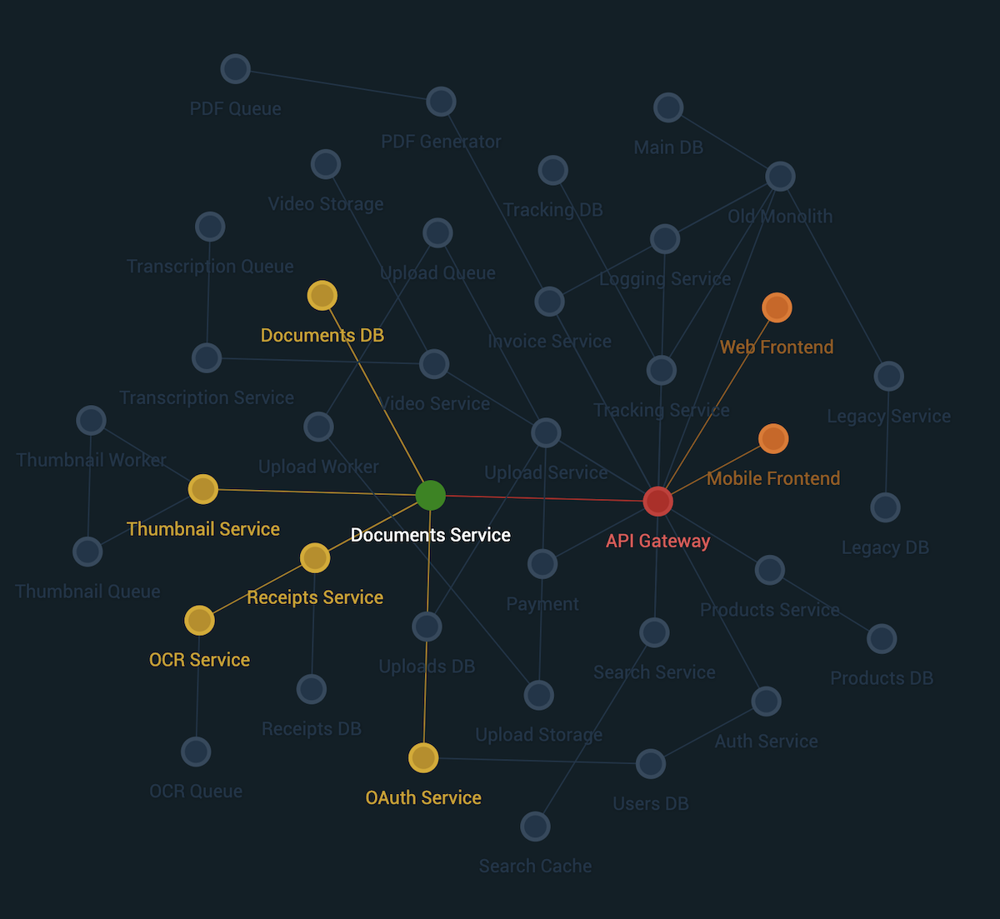
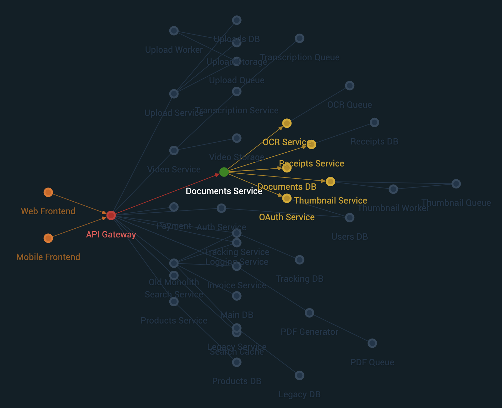

Newton Graph Library


This repository contains learning and prototype code for a high-level dashboard for architects and stakeholders. The goal is to visualize architectures in large organizations as organisms that live and breath with deployments, problems, etc. These real-time visualizations could instead reveal insights about how Conway's Law applies to the organization.
Example Graphs
The following show two different renders from the same demo data set:
| D3.js Engine | Webcola Engine |
|---|---|
|  |  |
| d3-force creates a "harmonious" distribution of nodes | cola.js can create directional graphs |
Highlight Relationships with Colors
In both examples above, the "Documents Service" is the highlighted node. The colors indicate a relationship to this node:
| Color | Relationship | Description |
|---|---|---|
| Green | In this example, the node had a status of up, so it is still green. |
|
| Red | is-source |
These nodes directly depend on "Documents Service". |
| Orange | is-deep-source |
These nodes do not directly require "Documents Service", but may still be impacted. |
| Yellow | is-target |
These nodes do not require "Documents Service", but may still be effected, e.g. decrease in incoming traffic. |
| Faded Out | has-no-relationship |
No releationship to highlighted node. |
For more information view API Documentation →
Network - Data Wrapper
A Network is essentially a data wrapper. Its biggest advantage is that it dynamically calculating links between nodes, based on a unique identifier uid, instead of array indexes.
Here is an example data set from the demo:
const data = {
nodes: [
{ id: 'w', label: 'Web Frontend' },
{ id: 'm', label: 'Mobile Device' },
{ id: 'b', label: 'Monolith Backend' },
{ id: 'd', label: 'Database' },
],
links: [
{ source: 'w', target: 'b' },
{ source: 'm', target: 'b' },
{ source: 'b', target: 'd' }
]
}
Graph - Visualization
While Network handles the data, Graph handles the visualizations, including layout, animations, etc.
const network = new Network(data.nodes, data.links)
const graph = new Graph({
width: window.innerWidth,
height: window.innerHeight,
flow: 'horizontal',
draggable: true,
network: network // required
})
graph.init()
graph.on('node:click', (n) => {
graph.highlightDependencies(n, { arrows: true })
})
Development
Install dependencies
First install the dependencies required:
npm install
Preview
To view the prototype in the browser, run
npm run demo:dev
which starts the webpack dev server and automatically opens http://localhost:9000 in a browser window.